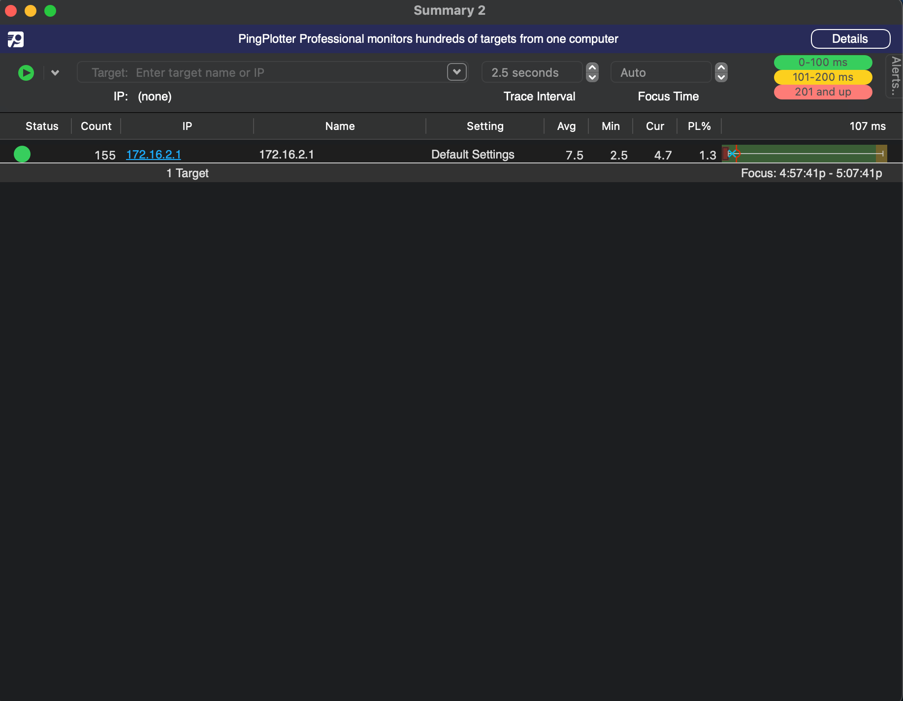
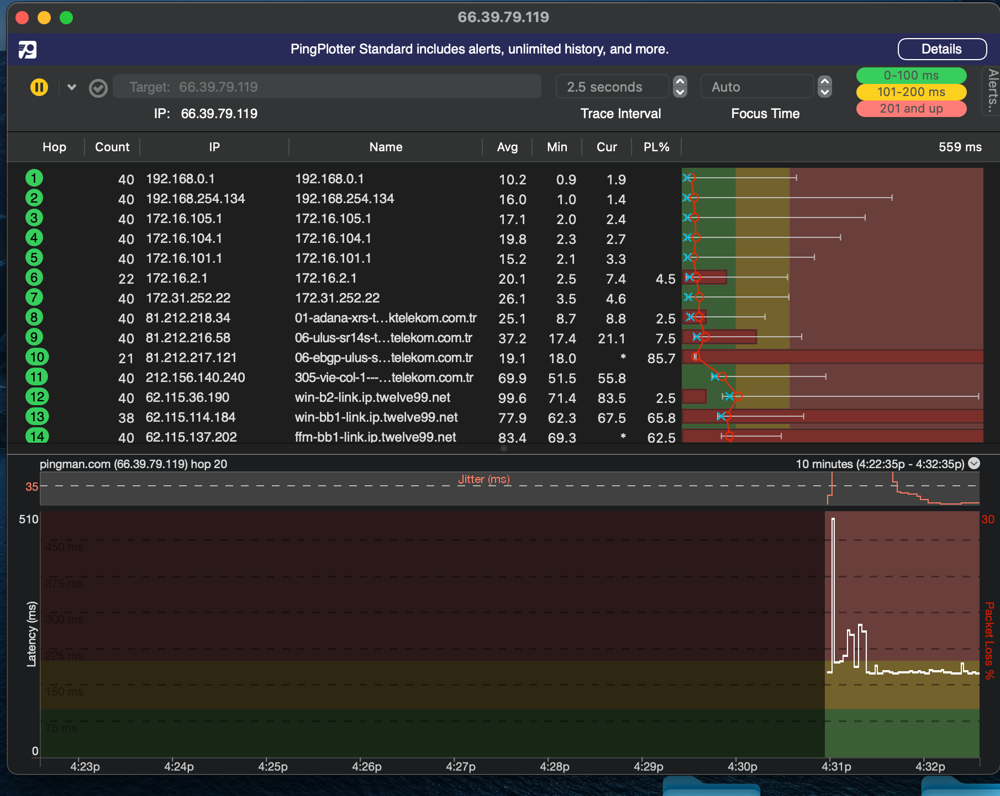
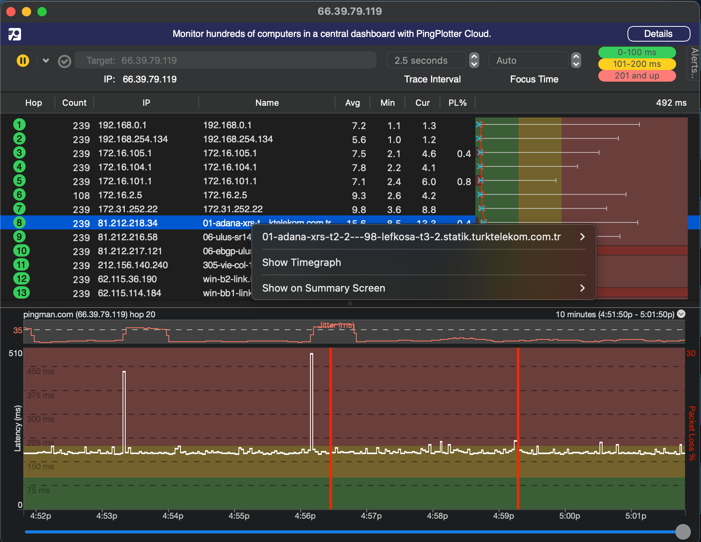
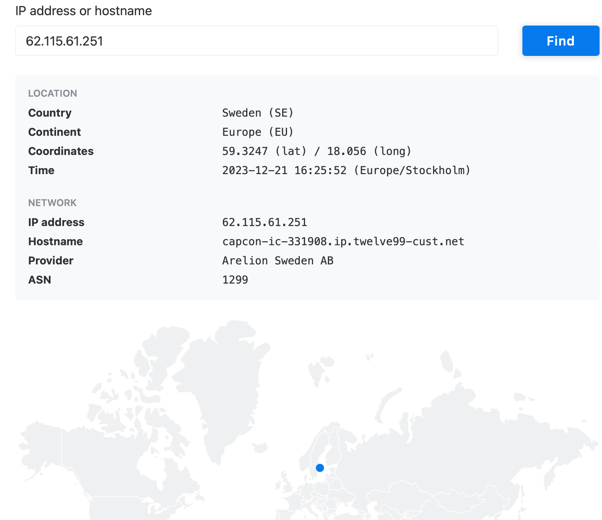
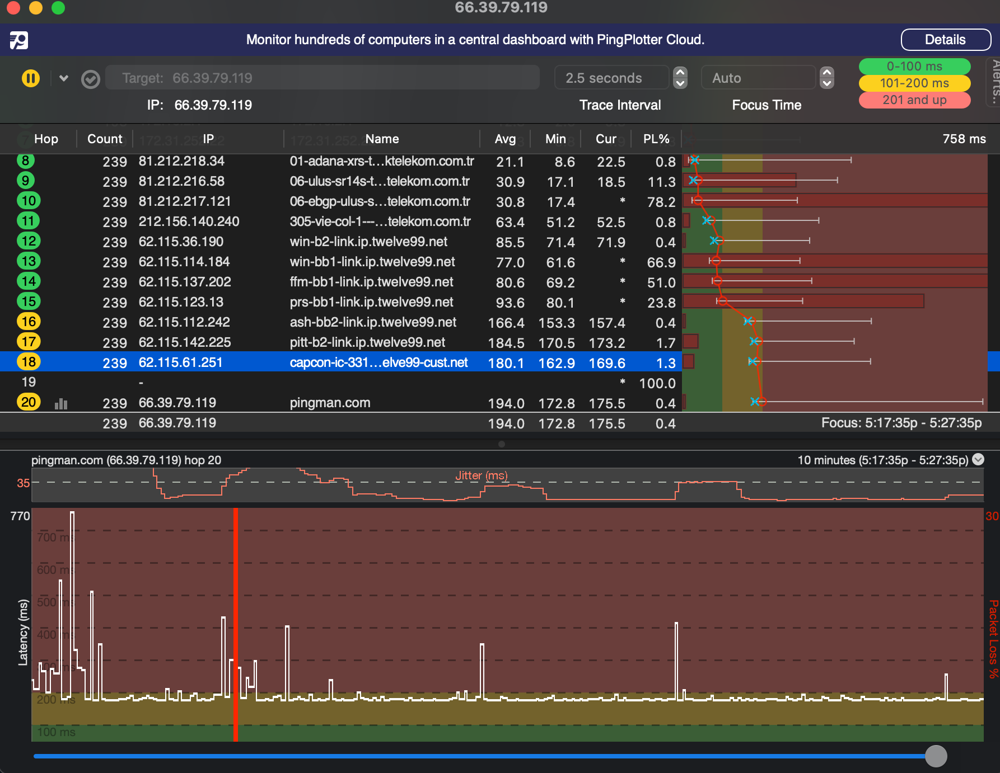

I selected the Pingplotter application, beacause it was stressfree and easy to work on my Mac OS and also the Pingplotter application is available on all computer platforms and will provide us with a more thorough view of the information we seek.
This includes information such as hops, the time it takes to get there, the health of our network, packet tracking, and more.
This is a screenshot of the application

The top of the screen it allows us to trace our route to a website or an IP address. Generally, when diagnosing network problems, you want to trace to a stable server that has an expected outcome so you have a baseline to compare against. Google's 8.8.8.8 server is one of the more well-known DNS servers that is frequently used due to its low latency; here, we will enter the IP of that DNS server and click start:

We can tell that our LAN IP is 192.168.0.1, but it's important to note that this IP is only a local IP for the main hub/router. Additionally, we can see a graph at the bottom of the app that shows the roundtrip time in MS after entering our desired IP (in this case, 8.8.8.8). The programme will then begin to trace the packet all the way from your LAN to the target. Since we are using this app, it also gives us the IP address of each server our packet travels through.

using this we can also say that until the 2nd hop the internet is local, since we see an increase in latency after hop 2. I hop 8, which as the name of the server suggests this is where internet from lefkosa goes to turkey, Adana to be exact!, now we know where cyprus gets its internet from.

We are able to determine that we have arrived in Sweden (SE) thanks to the IP lookup, and since the IP is registered under Google's name, we have successfully reached the intended DNS server.
Using this application (ping plotter), we can have some proof or evidence if the issue is from our ISP or not, if there was ever an issue! Overall, this was a very fun experiment to try and figure out what route your packet takes to arrive at the server you're requesting data from. We can see how easy it is to determine the causes of internet issues .

Doing this Scanning processes wasn't really challengeing as i thought it would even tho i resumed late.